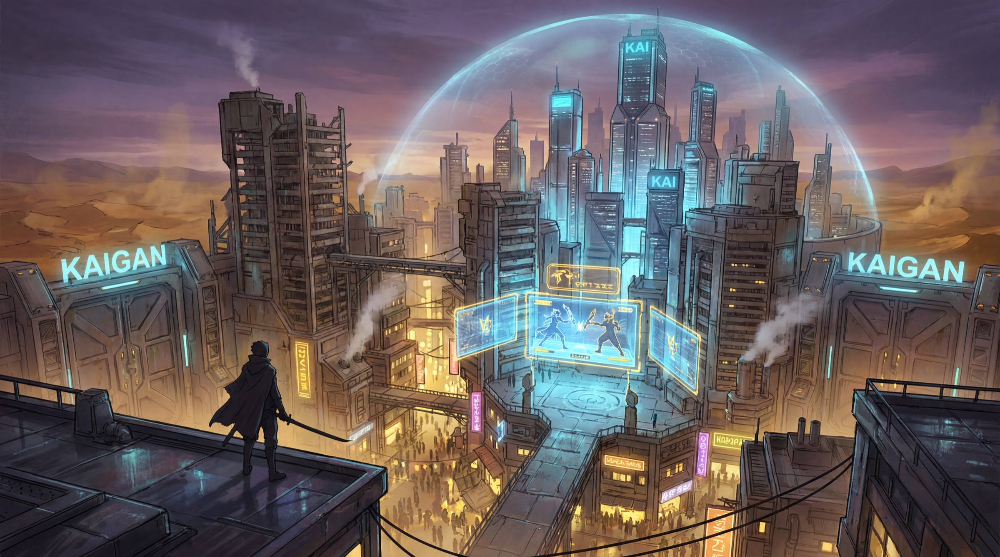
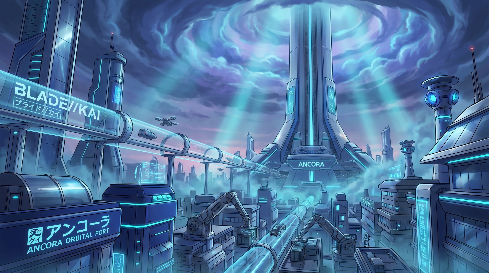
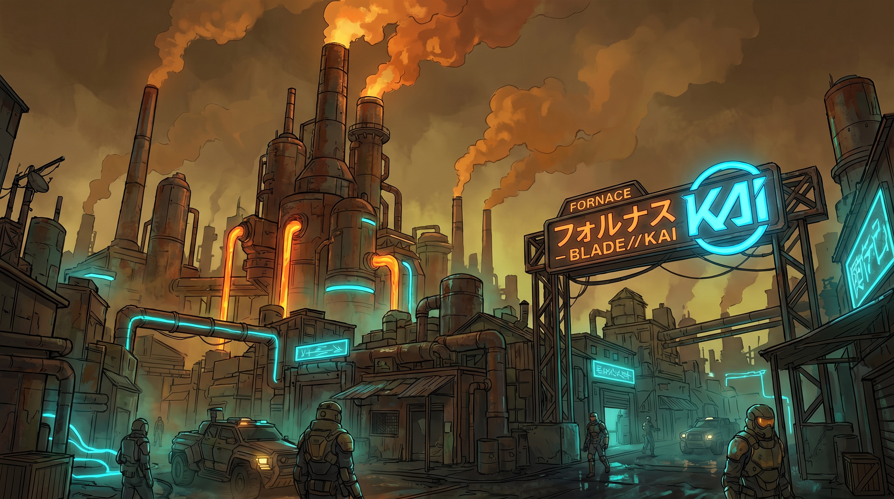
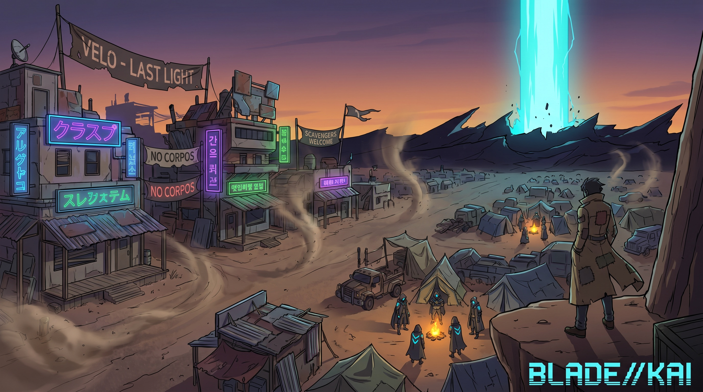
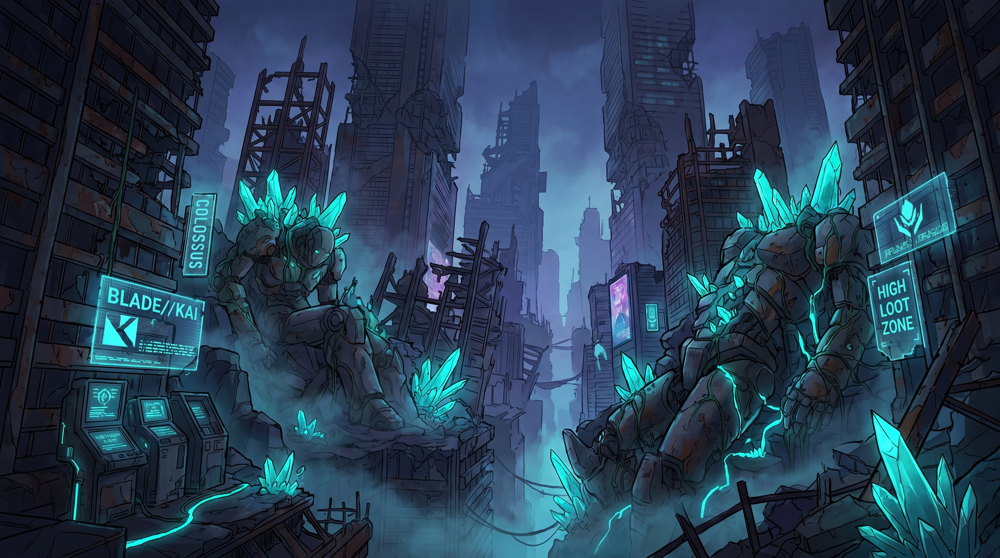
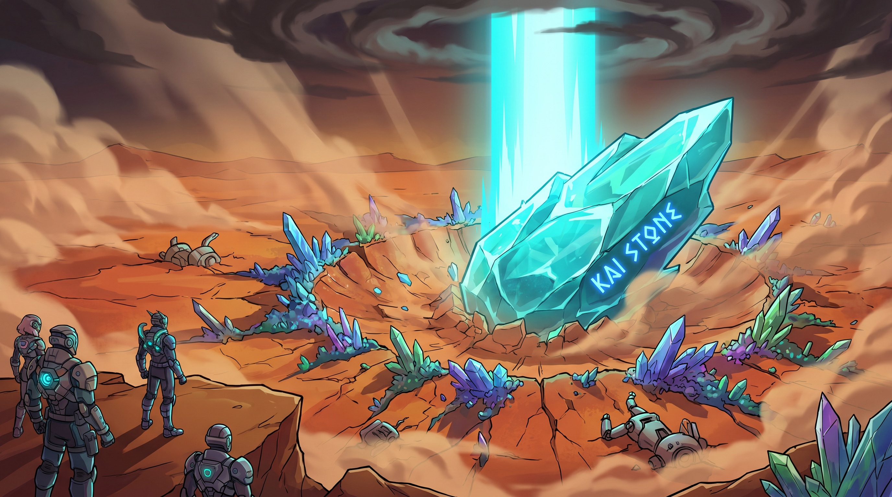
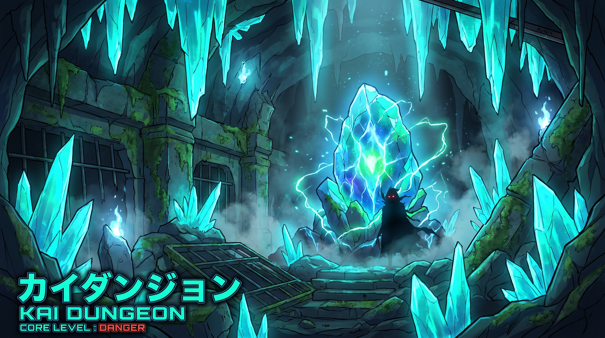

Un continente a cluster stile Albion + patchwork di terreni stile GGO. Gradiente sud→nord: più sali, più rischi. Niente teletrasporto tra città — il viaggio è il gioco.
La Cintura è un anello di insediamenti attorno all'Epicentro, il primo e più profondo cratere KAI. Più ci si avvicina, più la terra è cristallizzata, ostile e ricca.
Sud = città sicure, biomi miti, tier basso. Nord = wasteland, Zone Nere, COLOSSI. Salire è una scelta di rischio/ricompensa, non un livello sbloccato.
Nessun teletrasporto tra città. Ci si muove fisicamente attraverso le zone — ed è lì che vive il PvP. La mappa non è un menu, è terreno.
Regioni a bioma incastrate come un mosaico (Dune, Palude dell'Arca, Foresta di Vetro, Campi Crateri, Creste…). Ogni bioma detta nemici, loot e dungeon.
Cinque hub, cinque facce della società post-Ritorno. Ognuna è una porta verso un tipo di gioco diverso.

La prima città del Ritorno, costruita dentro le rovine sotto una cupola d'aria purificata. Sede del Circuito: holo-duelli in Plaza, armerie, broker, tornei. È il cuore pulsante e l'unico hub della v1. Verticale: chrome d'élite in alto, bazaar neon di mercenari in basso.

L'ascensore orbitale Terra↔Nova Eden. Ricca e non libera: controllo novaediano capillare. Qui passa tutto il KAI estratto diretto in alto. Lusso freddo, sorveglianza ovunque.

Company town di Halcyon. Aria peggiore della wasteland: raffinerie KAI a cielo aperto, smog perenne. Il lato oscuro del boom energetico — la gente paga il prezzo che l'orbita non vede.

Ultima luce prima dell'Epicentro. Niente sponsor: qui la legge è la reputazione. Avamposto di scavatori e fuorilegge, neon di fortuna, una colonna di luce KAI all'orizzonte buio.

Zona Nera urbana, dungeon verticale a cielo aperto. I COLOSSI dormono qui. Loot top, mortalità top. Non è una città dove si vive: è una dove si entra armati e si spera di uscire.
Il livello di PvP e la penalità di morte sono proprietà del terreno, non una modalità che scegli. Sai sempre quanto stai rischiando da dove ti trovi.
| Zona | PvP | Alla morte | A chi serve |
|---|---|---|---|
| Città | Neutra — armi disabilitate | Logout sicuro | Hub, commercio, social, deposito loot |
| Gialla | Solo Assassini possono colpire | Non perdi nulla | Farm a basso rischio, primo PvE |
| Rossa | Aperto a tutti | Perdi il loot non depositato | Il vero gioco: rischio reale, ricompensa reale |
| Nera | Aperto a tutti | +5% un pezzo equip (salvo Sigillo KAI) | Endgame, loot top, mortalità massima |
Sistema in stile Metin2: uccidere in zona protetta ha un costo sociale, non solo meccanico. Il PvP non è gratis, e questo tiene il mondo abitabile.
Chi non attacca innocenti resta in regola. Accesso pieno alle città, ai mercati, alle quest. È lo stato di default, e ha valore proprio perché si può perdere.
Chi uccide in zona gialla accumula karma negativo: diventa bersaglio legittimo ovunque, sanzioni in città, taglie sulla testa. Il PK è una scelta con conseguenze durature.
Il sistema dungeon non è statico: nasce dal mondo vivo. Una pietra cade, e con essa un'istanza temporanea da saccheggiare prima che si spenga.


Una pietra KAI precipita nella wasteland: colonna di luce ciano visibile da lontano. Evento server-wide — comincia la corsa al cratere.
L'impatto cristallizza il territorio e apre un dungeon generato: bioma e tier ereditati dalla regione colpita. Ogni pietra è un'istanza diversa.
Al centro, la Pietra stessa = boss. Distruggerla = loot grosso e il territorio si spegne. Party 1–4, solo PvE dentro.